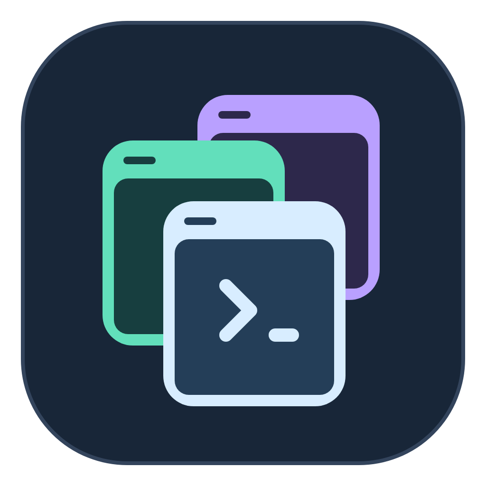

Android · iOS · OpenHarmony
系统镜像由你选择。导入本地运行环境，再将应用拖入对应实例。
没有设备时，请先通过上方说明在 Android Studio 创建，再点击检查。
只记录目录位置，不复制镜像。系统首次启动会在运行环境中创建或更新用户数据，请预留磁盘空间。
正在读取系统实例…
正在读取应用库…
设置用于打开 IPA 的本地运行环境。
运行兼容的早期 32 位应用。
将兼容的 ARM64 IPA 提交给 iOS 16 虚拟机。